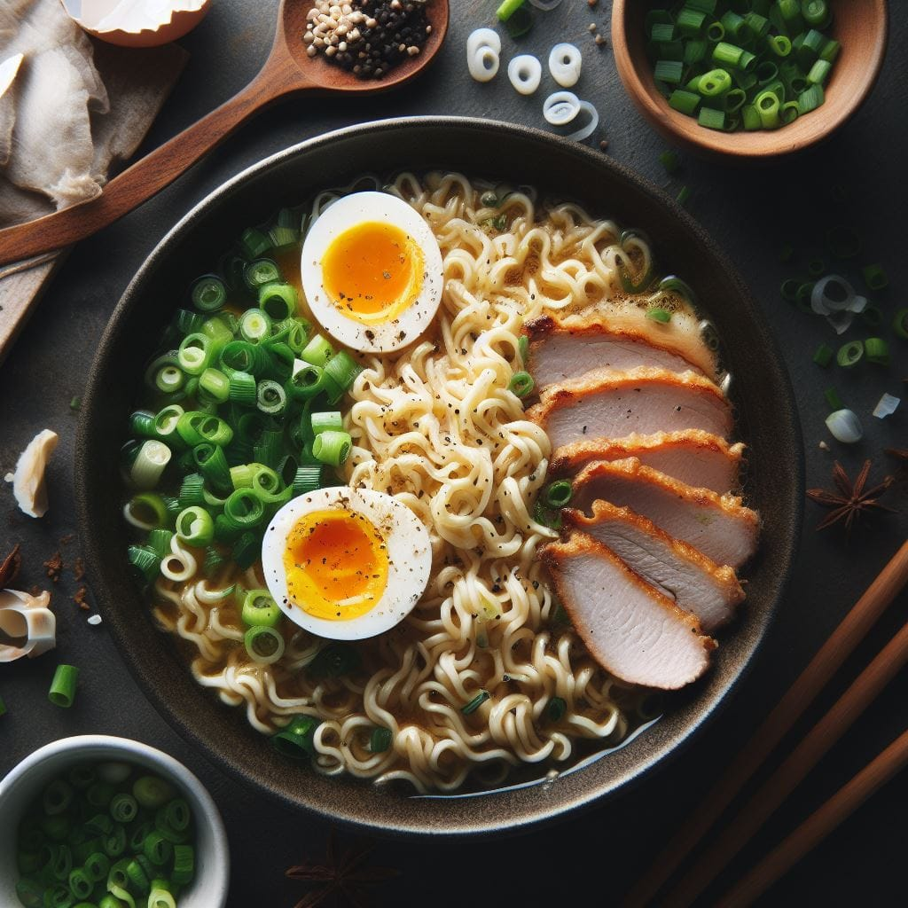
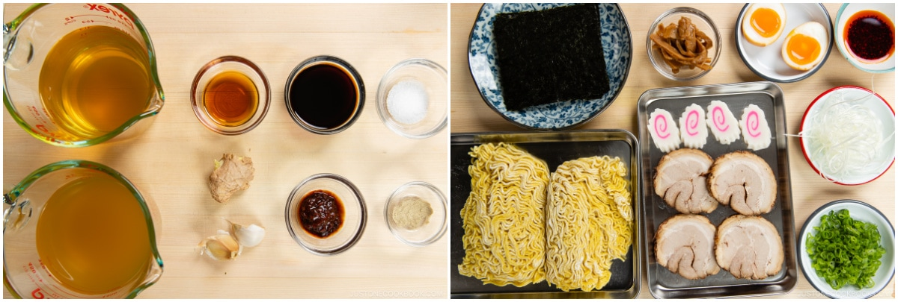
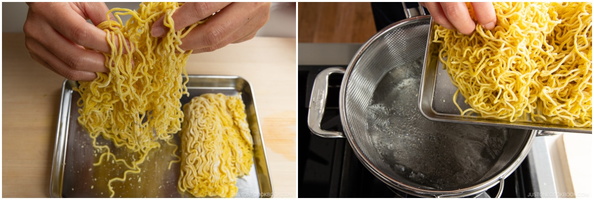
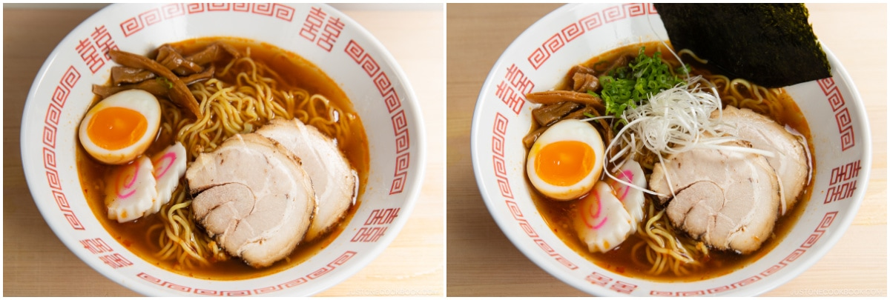

Ramen

Description
Ramen is a popular Japanese dish consisting of Chinese-style wheat noodles served in a rich broth. The broth can be made from meat (such as pork or chicken), seafood, or vegetables, and typically has a savory base flavored with soy sauce (shoyu), miso, or salt (shio). The dish is often topped with various ingredients like sliced pork (chashu), a boiled egg, green onions, bamboo shoots, nori (seaweed), and sometimes corn or butter.
Ramen comes in several regional variations, including Sapporo (known for its miso ramen), Hakata (known for its rich tonkotsu pork broth), and Tokyo-style (usually soy-based with a clear, savory broth). It’s a versatile dish, with flavors ranging from light and subtle to rich and hearty.
Ingredients
For the Soup Broth
- 1 tsp ginger (grated, with juice; from a 1-inch, 2.5-cm knob)
- 2 cloves garlic
- 1 Tbsp toasted sesame oil
- 2 tsp doubanjiang (spicy chili bean paste) (use either the spicy or non-spicy type, or use gluten-free doubanjiang)
- 1½ cups chicken stock/broth (use vegetable stock for vegan/vegetarian)
- 1½ cups dashi (Japanese soup stock) (I use 2 dashi packets to make a strong dashi; or use standard Awase Dashi, dashi powder, or Vegan Dashi)
- 2½ Tbsp soy sauce (use gluten-free soy sauce for GF)
- 1 tsp Diamond Crystal kosher salt
- ⅛ tsp white pepper powder (plus more at the table)
For the Noodles
- 2 servings fresh ramen noodles (10–12 oz, 283–340 g fresh noodles; 6.3 oz, 180 g dry ramen noodles; for gluten-free, use GF ramen noodles)
For the Toppings (prepare in advance)
- 4 slices Homemade Chashu (Japanese Braised Pork Belly) (buy it premade at a Japanese grocery store or make my Chashu at least a day in advance; skip for vegan/vegetarian)
- 1 Ramen Egg (Ajitsuke Tamago) (sliced in half lengthwise; make my Ramen Eggs at least a day in advance; skip for vegan)
- 4 slices narutomaki (fish cakes) (skip for vegan/vegetarian)
- ¼ cup menma (seasoned bamboo shoots) (you can buy it at a Japanese grocery store or on Amazon; you can make my Quick Menma Recipe)
- 1 green onion/scallion (chopped)
- Shiraga Negi (julienned long green onions) (follow my tutorial on how to prepare Shiraga Negi)
- ½ sheet nori (dried laver seaweed) (cut in half)
- la-yu (Japanese chili oil) (optional; make my Homemade La-yu)
Steps
Before You Start
- Prepare the ramen toppings ahead of time (a day in advance for the ramen egg and homemade chashu) so they‘re ready to serve with your piping hot ramen soup.
- A typical ramen bowl can hold 1200–1400 ml of liquid. We will prepare 1½ cups (360 ml) of soup broth per bowl, which should be more than enough for a ramen bowl size. If you’re using bigger bowls, you may need to prepare extra soup to fill them up.
- Gather all the ingredients. Next, prepare a big pot of water for cooking the ramen noodles. Slowly bring it to a boil on medium heat while you prepare all the ingredients.

To Prepare the Soup Broth
- Grate the ginger (I use a ceramic grater) and reserve 1 tsp ginger, grated, with juice. Mince or press 2 cloves garlic (I use a garlic press). Tip: If you’re unsure how much ginger flavor you’d like, start with less and add more later.
- Set a small saucepan over medium-low heat. Add 1 Tbsp toasted sesame oil, the garlic, and the grated ginger. Cook until fragrant, about 1–2 minutes. Tip: Make sure not to burn the aromatics.
- Add 2 tsp doubanjiang (spicy chili bean paste) and stir for 15 seconds.
- Add 1½ cups chicken stock/broth, 1½ cups dashi (Japanese soup stock), and 2½ Tbsp soy sauce and bring it to a boil. Once boiling, reduce the heat and simmer for a few minutes.
- Taste the soup now and adjust the seasoning with 1 tsp Diamond Crystal kosher salt and ⅛ tsp white pepper powder. Don‘t be shy about adding salt because the broth will taste less salty after you add the noodles. Cover with a lid, reduce the heat to low, and keep the soup barely simmering while you quickly boil the noodles. You want the soup piping hot and ready to pour as soon as the noodles are done cooking.
To Cook the Noodles
- Before cooking, loosen up 2 servings fresh ramen noodles with your hands. Once the big pot of water is boiling, add the noodles and cook according to the package instructions. Here, I cook the noodles inside a big noodle strainer (I got it in Japan) that I’ve set inside the pot.

- While cooking, stir and separate the noodles with chopsticks. When the noodles are done cooking, drain them well in a strainer, shaking it a few times to drain the water thoroughly (otherwise it will dilute the soup broth).
To Serve
- Divide the noodles into the individual ramen bowls. Pour about 1½ cups (360 ml) of the hot soup broth into each bowl.
- Now, arrange the noodles in the bowl for an attractive presentation. First, lift the soup-soaked noodles high and straighten them. When the noodles are neatly aligned, fold the noodles from the edge of the bowl and place them over the noodles in the soup. This is an optional step, but ramen shops typically do this so the ramen looks pretty.
- Quickly and neatly arrange the prepared toppings on top of the noodles. Serve immediately and season to taste with additional white pepper powder and optional la-yu chili oil.

To Store
- You can keep the leftover soup and toppings separately in airtight containers and store in the refrigerator for up to 3 days. Cook the noodles right before serving.
Back to the list of recipes!